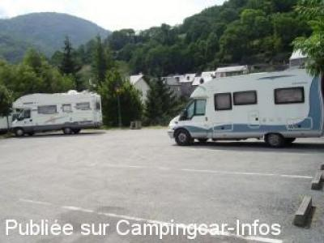
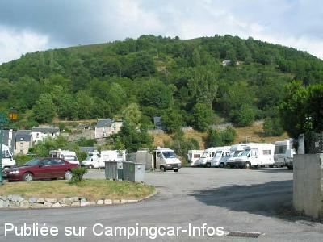

ASN = Aire de services avec stationnement nuit possible de :
ARREAU
(N° 495)
Accès/adresse :
Parking du Château de Nestes
65240 ARREAU
65240 ARREAU
Latitude : (Nord) 42.90724° Décimaux ou 42° 54′ 26′′
Longitude : (Est) 0.35937° Décimaux ou 0° 21′ 33′′
Tarif : 2015
Stationnement, services : 2 €
Passage d'un agent pour encaisser
Type de borne : Autre
Services :


Marché le jeudi
Commerces en villes à environ 300/400 m
Autres informations :
8 emplacements

Le 22/07/2012 par Gérard du 27

Le 31/07/2006 par jean_paul.bedouet
de
patmau33
le 02/08/2015 :
De passage le 25 juillet 2015 : parking en goudron à proximité de l'office du tourisme et du centre-ville. Il y a 2 robinets pour prendre de l'eau le long du grillage derrière les camping-cars, vidoir pour eaux noires, par contre il faut vider les eaux grises avec un seau dans le vidoir des eaux noires. Un agent municipal passe en soirée pour le paiement 2€.
De passage le 25 juillet 2015 : parking en goudron à proximité de l'office du tourisme et du centre-ville. Il y a 2 robinets pour prendre de l'eau le long du grillage derrière les camping-cars, vidoir pour eaux noires, par contre il faut vider les eaux grises avec un seau dans le vidoir des eaux noires. Un agent municipal passe en soirée pour le paiement 2€.
de
Papé Jack
le 22/05/2014 :
Très bien près du centre ville,qui est super.
Très bien près du centre ville,qui est super.
de
de Gérard du 27
le 22/07/2012 :
Nous sommes passés sur cette aire le 4/7/2012. La vidange est difficile. Le paiement est de seulement de 2 euros. Pour une aire située à proximité du centre d'un gentil bourg, c'est très bien. Si les campings-cars sont bien rangés, on peut être une douzaine, sinon il faudra faire beaucoup de manoeuvres pour sortir. Il n'y a pas d'électricité.
Nous sommes passés sur cette aire le 4/7/2012. La vidange est difficile. Le paiement est de seulement de 2 euros. Pour une aire située à proximité du centre d'un gentil bourg, c'est très bien. Si les campings-cars sont bien rangés, on peut être une douzaine, sinon il faudra faire beaucoup de manoeuvres pour sortir. Il n'y a pas d'électricité.
de
rafale
le 22/06/2012 :
Vidoir des K7 et eaux usées (à l'aide d'un seau) caché dans un trottoir entre deux stationnements de camping cars.
Paiement stationnement seulement en juillet et août semble-t-il.
Aire victime de son succès et engendrant un entassement de camping cars
Vidoir des K7 et eaux usées (à l'aide d'un seau) caché dans un trottoir entre deux stationnements de camping cars.
Paiement stationnement seulement en juillet et août semble-t-il.
Aire victime de son succès et engendrant un entassement de camping cars
de
pierre
le 14/08/2011 :
de passage le 4 aout2011 aire très bien entretenue. A revoir pour la vidange.Nuit calme.Aire a conseillé
de passage le 4 aout2011 aire très bien entretenue. A revoir pour la vidange.Nuit calme.Aire a conseillé
de
Ralph
le 25/10/2010 :
Stayed one night September 2010 Nice town only a short walk away with tourist office.
Sloping and marked places are difficult to access especially on market day when the local cars ignore the "Camping Cars only" sign. I had trouble getting the van out to leave because of parked cars.
Stayed one night September 2010 Nice town only a short walk away with tourist office.
Sloping and marked places are difficult to access especially on market day when the local cars ignore the "Camping Cars only" sign. I had trouble getting the van out to leave because of parked cars.
de
SEGUIN ALAIN
le 09/10/2010 :
Bonjour. Je suis actuellement sur cette aire de CC, effectivement pas mal, les services sont assez rudimentaires mais bon, il y a le minimun. Nous non plus, n'avons vu personne pour le réglement. Calme et tout près du village et de l'office du tourisme.
Vous pouvez vous y arrêter, au pied du col d'ASPIN, super pour les cyclos qui aiment grimper. Bonne route à tous, amis camping-caristes.
Bonjour. Je suis actuellement sur cette aire de CC, effectivement pas mal, les services sont assez rudimentaires mais bon, il y a le minimun. Nous non plus, n'avons vu personne pour le réglement. Calme et tout près du village et de l'office du tourisme.
Vous pouvez vous y arrêter, au pied du col d'ASPIN, super pour les cyclos qui aiment grimper. Bonne route à tous, amis camping-caristes.
de
jmg
le 13/06/2010 :
Bonjour. Je viens d'y passer la nuit de samedi à dimanche. Pour une étape, ce n'est pas mal, proche des commerces. Marqué payant sur le panneau, je suis arrivé vers 19h30 samedi soir, et j'en suis reparti dimanche vers 14h je n'ai vu personne pour payer !
Bonjour. Je viens d'y passer la nuit de samedi à dimanche. Pour une étape, ce n'est pas mal, proche des commerces. Marqué payant sur le panneau, je suis arrivé vers 19h30 samedi soir, et j'en suis reparti dimanche vers 14h je n'ai vu personne pour payer !
de
M.famelart
le 23/07/2009 :
Bonjour à tous. De passage ce mois de juillet, je vous signale que l'aire est devenue payante, 2€ qu'une personne de la municipalité passe pour encaisser. La boulangère est également passée au matin. Apparement tout le parking est maintenant destiné à l'usage des CC. §
Bonjour à tous. De passage ce mois de juillet, je vous signale que l'aire est devenue payante, 2€ qu'une personne de la municipalité passe pour encaisser. La boulangère est également passée au matin. Apparement tout le parking est maintenant destiné à l'usage des CC. §
de
J. P. Bedouet
le 22/07/2006 :
Emplacements bien délimités et horizontaux. Plusieurs points d'eau, mais pas de robinet fileté. Vidange eaux usées et WC dans le même emplacement peu pratique (tuyau indispensable ou utiliser un récipient). Aire très agréable, située à proximité d'un village charmant, encore plus si vous y êtes le jour de la fête du gâteau à la broche, comme ce fut le cas pour nous. Merci à la municipalité et aux habitants de nous recevoir ainsi!
Emplacements bien délimités et horizontaux. Plusieurs points d'eau, mais pas de robinet fileté. Vidange eaux usées et WC dans le même emplacement peu pratique (tuyau indispensable ou utiliser un récipient). Aire très agréable, située à proximité d'un village charmant, encore plus si vous y êtes le jour de la fête du gâteau à la broche, comme ce fut le cas pour nous. Merci à la municipalité et aux habitants de nous recevoir ainsi!